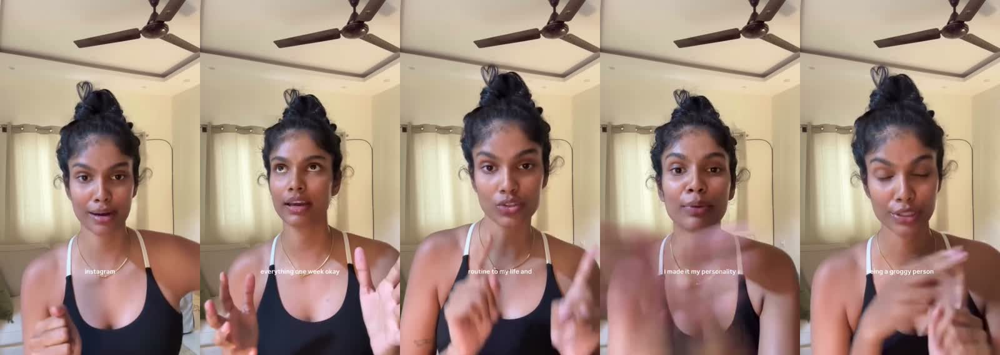

For a rival CEO · Brand: The Stack Club (thestack.club, supplements, India) · Meta Ad Library, IN · Snapshot 14 Oct 2026 · 10 most recent active ads · Meta hides commercial spend/impressions, so traction reads are inferred from survival and refresh — never measured ROAS.
Verdict: The Stack Club is running a tight, winning sleep playbook — one hero product, one control message refreshed for 7 weeks, and a 3-video UGC surge in late September that looks like their scaling bet. Their edge is trust engineering, not offers: zero discounts anywhere. The open attack lines are price/offer white space and a 70%-on-one-product concentration.
Evidence key: observed = in the scraped payloads · inferred = analyst read, stated confidence where it matters.
1Themes up front — and which one is winning
Theme
Ads observed
Window
Traction read inferred
Anti-melatonin control — Mg bisglycinate + glycine, “stress mode to recovery mode”
5 statics
26 Aug → 26 Sep, refreshed 4×
Strongest. 49-day survival with 4 visual refreshes is the classic graduated-winner signature: Meta keeps delivering it, they keep feeding it variants.
UGC trust wall — creator ritual, repeat endorser, personal story
3 videos
22–23 Sep (2 days)
Scaling bet. Three creator shoots dropped in 48 hours = new production budget unlocked behind this format. Watch for siblings.
Evergreen survivor. Oldest video still served; Hinglish widens reach beyond English-only buyers.
Gut-immunity probe — “supporting immune biology”
1 video
23 Sep, no siblings
Early test. Lone ad = hypothesis stage. If a second gut creative appears, they're diversifying off sleep.
Product split observed: Complete Sleep Stack 7/10, Deep Rest magnesium line 2/10, Gut Defender 1/10. Format split 5 video / 5 image. CTA is Shop now on all 10, every link deep to a product page.
2What the numbers say
Signal observed
Value
Read inferred
Oldest live creatives
49 days (26 Aug → 14 Oct), one static + one video
Surviving 7 weeks in Meta delivery means these clear the account's internal bar — treat as proven winners, medium-high confidence.
Refresh cadence
New control-static visual every ~9–12 days (1 Sep, 13 Sep, 22 Sep, 26 Sep)
Deliberate frequency management: same words, new skin. They fight fatigue with production, not rewrites.
Video burst
3 of 5 videos launched 22–23 Sep
Fresh creative budget deployed behind UGC in one push — likely a monthly content-batch cycle. Medium confidence.
Creator share
≥3 of 10 ads are creator-shot (~30%+ partnership-style)
Paid-social best practice says creator content buys net-new reach; their mix matches a scaling account, not a testing one.
Video length
59–102s talking-head explainers (avg ~72s)
Long for prospecting — suggests the videos double as education assets (retargeting/organic reuse), not just click-drivers.
Offer presence
Zero: no price, discount, trial, or guarantee in any copy
Either margins fund pure-brand bidding (strength) or an untested CRO lever (your opening).
3Creative strategy in one paragraph
Image-first validation, then video scale-up: prove the angle cheap with statics (the control block), then spend production only on winners — five statics carry one message while each video carries a distinct hook. Per the hook-system lens, their hooks rotate opening moves (aspiration, reframe, contrarian, anti-hype, borrowed authority) instead of rewording one claim, which buys distinct audience pockets rather than re-testing the same one. The on-ramp discipline is tight: every hook's premise (architecture, ritual, biology) is extended in seconds 3–15, never abandoned for a brand intro.
4Frame-by-frame: the 5 videos
Strips below sample each video at 5 evenly spaced points. Captions quoted are on-screen text observed in frames; voiceover is inferred from captions where noted.
4a. MetaMag personal story (65s, 23 Sep) — first-person confession

5 sampled frames, left to right
Hook (0–3s): selfie talking-head, bedroom, “being a groggy person” — identity confession mirrors the viewer's mornings.
On-ramp: “everything one week okay” — a time-boxed trial promises low commitment.
Body: “routine to my life” — product becomes habit infrastructure, not a purchase.
Escalation: “I made it my personality” — identity-level payoff, the strongest retention claim a supplement can make.
Land: direct order title (“Order the Real Magnesium Bisglycinate today”) converts story into SKU.
On-ramp: “KAAFI SIMPLE HAI” (it's quite simple) — complexity collapse; the answer will be easy.
Body: direct-to-camera industry talk (“WOH WOH”) — positions the speaker as insider, the buyer as newly informed.
Language read: Hindi-English mix reaches buyers English-only creatives miss — a quiet reach advantage in urban India.
Survival read: 49 days live — oldest video standing; treat as proven inferred.
5Alpha — where they're strong, where to hit them
Their edge inferred
Trust compounds. Three independent voices (brand science, creator ritual, repeat user) repeat one mechanism. That is expensive to replicate and cheap for them to extend — every new creator multiplies it.
Mechanism ownership. “Recovery mode”, “2-part system”, “radiator” — they sell a named process, not a mineral. Competing on milligrams concedes the frame.
Testing discipline. One variable per iteration (visuals rotate, copy frozen), ~10-day refresh cadence, video budget only behind validated angles. This account learns fast.
Funnel tightness. Zero homepage leakage; every click lands on the exact SKU with Shop now. Post-click congruence is already handled (the cro lens finds nothing to exploit here).
Attack lines for a rival CEO
Occupy the offer vacuum. No price anchor, trial, guarantee, or urgency in 10 ads. A risk-reversal offer (30-night guarantee, starter pack) undercuts a premium trust play directly.
Steal the morning. Only one ad describes waking up clear. Own the morning-after outcome — energy, focus, “first meeting” creative — and their sleep story ends at bedtime.
Force diversification errors. 70% of the set is one product. If you pressure sleep (price, comparison, “magnesium is magnesium”), their whole account feels it the same week.
Mind the gut probe. If Gut Defender gets siblings, they're building a second leg — contest immunity framing early, before it hardens.
Exploit the blank title. Minor, but their best testimonial wastes the feed-title slot. Small polish gaps suggest a lean team — speed is your weapon.
6The stealable playbook
1. Themes they hit (steal the structure, not the words)
Name a mechanism, not an ingredient (“recovery mode”, “2-part system”).
Wedge against the default alternative without naming it (“no melatonin dependency”).
Stack three voices on one claim: brand proof, creator ritual, repeat user.
2. How they hook (three components, never one)
Visual stops the thumb: research paper, product macro, bottles in hand, confession close-up.
Spoken line opens the loop: confession, bold claim, or question — never the brand name first.
Caption anchors sound-off: every video carries full caption overlays; nothing depends on audio.
Rotate opening moves across ads (aspiration, reframe, contrarian, anti-hype, authority) — one move per ad, never five rewordings of one.
3. How they land the story
On-ramp extends the hook's premise (seconds 3–15), then mechanism demo, then product-as-system.
Close on identity or label-reading (“my personality”, “no added sugar and junk”), not specs.
One CTA, one SKU page. No branching, no homepage.
7Evidence — all 10 ads
Started
Product
Format
Hook
Library ID
26 Sep
Sleep Stack
Image
“Pure Magnesium + Glycine…” (control)
1465000198804887
23 Sep
Deep Rest MetaMag
Video 65s
“Good sleep should not be a luxury”
1630168665158439
23 Sep
Gut Defender
Video 60s
“Isn't about blindly boosting…”
1985521325475393
23 Sep
Sleep Stack
Video 102s (UGC)
“Isn't just about more hours…”
947813558368475
22 Sep
Sleep Stack
Video 67s (UGC)
“Made a video on this before”
1580599567147917
22 Sep
Sleep Stack
Image
Control copy, new visual
1070900472519264
13 Sep
Sleep Stack
Image
Control copy, new visual
3200415806826639
1 Sep
Sleep Stack
Image
Control copy, new visual
1606641784342353
26 Aug
Deep Rest
Video 59s (Hinglish)
“Built For Outcomes, Not Hype”
966909969754365
26 Aug
Sleep Stack
Image
Control copy, original visual
1627675208772003
Full creatives (5 videos, 5 images) and frame strips are saved under reports/stackclub/assets/; structured records in ads_top10.json.